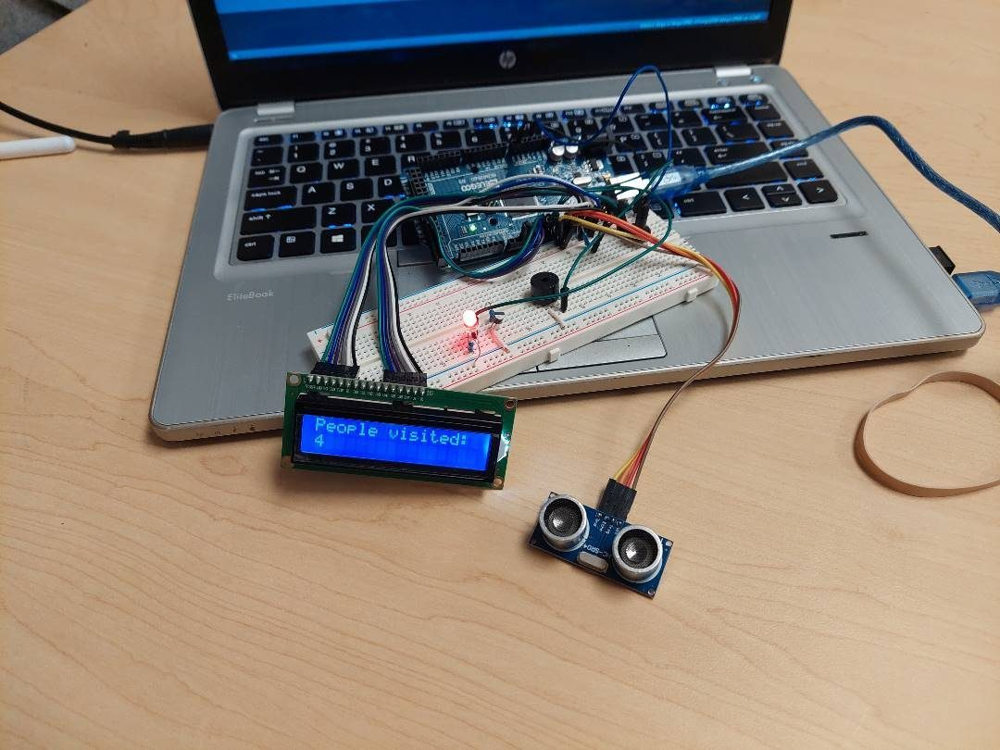
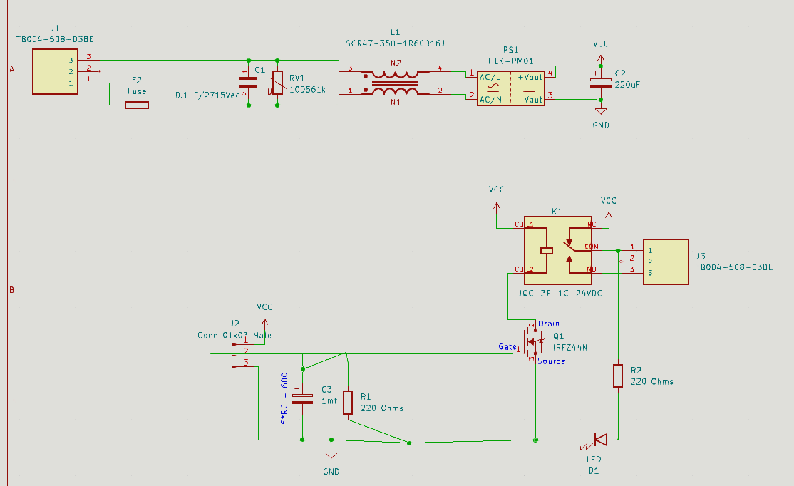
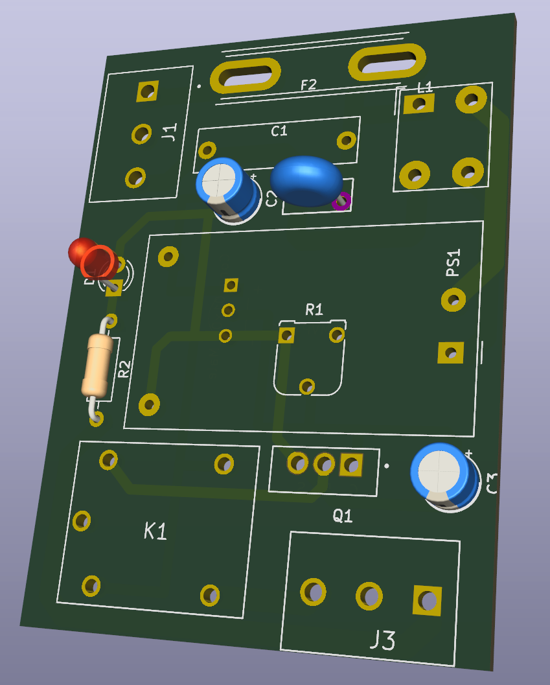
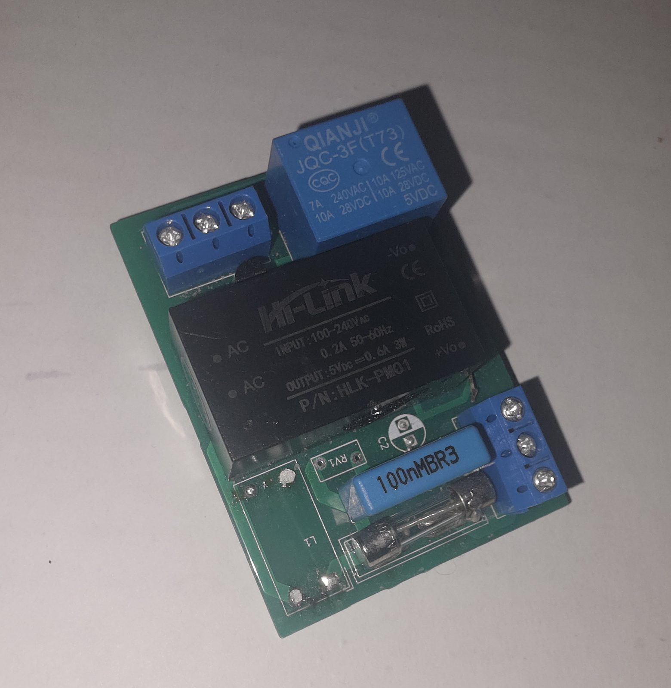

Affordable Occupancy Sensor – Prototype & PCB
Overview
Prototyped and developed a low-cost occupancy sensor to detect human presence for energy-efficient automation applications.
What I Did
- Designed sensor circuitry and signal conditioning for reliable detection.
- Created schematic and PCB layout for a compact prototype.
- Integrated sensor output with digital processing logic.
- Tested accuracy and responsiveness under different conditions.
System Images




Results
- Successfully detected occupancy with consistent performance.
- Delivered a functional, low-cost prototype suitable for developing countries.
- Gained experience in sensor integration and PCB prototyping.